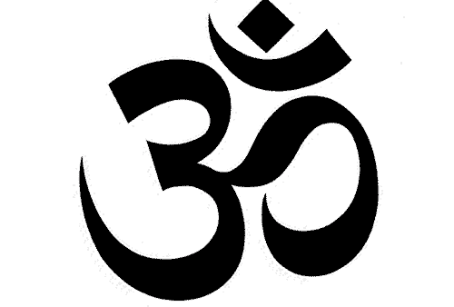

Religious and Spiritual Meditation
Bahá'í Faith
Bahá'í Faith
In the teachings of the Bahá'í Faith meditation, along with prayer, is one of the primary tools for spiritual development,[76] and it mainly refers to one's reflection on the words of God.[77] While prayer and meditation are linked where meditation happens generally in a prayerful attitude, prayer is seen specifically as turning toward God,[78] and meditation is seen as a communion with one's self where one focuses on the divine.[77]
The Bahá'í teachings note that the purpose of meditation is to strengthen one's understanding of the words of God, and to make one's soul more susceptible to their potentially transformative power,[77] and that both prayer and meditation are needed to bring about and to maintain a spiritual communion with God.[79]
Bahá'u'lláh, the founder of the religion, never specified any particular form of meditation, and thus each person is free to choose their own form.[76] However, he specifically did state that Bahá'ís should read a passage of the Bahá'í writings twice a day, once in the morning, and once in the evening, and meditate on it. He also encouraged people to reflect on one's actions and worth at the end of each day.[77] The Nineteen Day Fast, a nineteen-day period of the year, during which Bahá'ís adhere to a sunrise-to-sunset fast, is also seen as meditative, where Bahá'ís must meditate and pray to reinvigorate their spiritual forces.[80]
Buddhism

Main article: Buddhist meditation
Dynamic tranquility: the Buddha in contemplation.
Buddhist meditation refers to the meditative practices associated with the religion and philosophy of Buddhism. Core meditation techniques have been preserved in ancient Buddhist texts and have proliferated and diversified through teacher-student transmissions. Buddhists pursue meditation as part of the path toward Enlightenment and Nirvana.[81] The closest words for meditation in the classical languages of Buddhism are bhāvanā,[82] jhāna/dhyāna,[83] and vipassana. According to Manmatha Nath Dutt, there is hardly any difference between mainstream Hinduism's Dhyana, Dharana and Samadhi with the Buddhist Dhyana, Bhavana, Samadhi, especially as both require following the precepts (nayas and niyamas.)
Buddhist meditation techniques have become increasingly popular in the wider world, with many non-Buddhists taking them up for a variety of reasons. There is considerable homogeneity across meditative practices – such as breath meditation and various recollections (anussati) – that are used across Buddhist schools, as well as significant diversity. In the Theravāda tradition alone, there are over fifty methods for developing mindfulness and forty for developing concentration, while in the Tibetan tradition there are thousands of visualization meditations.[84] Most classical and contemporary Buddhist meditation guides are school-specific.[85]
The Buddha is said to have identified two paramount mental qualities that arise from wholesome meditative practice:
"serenity" or "tranquillity" (Pali: samatha) which steadies, composes, unifies and concentrates the mind;
"insight" (Pali: vipassana) which enables one to see, explore and discern "formations" (conditioned phenomena based on the five aggregates).[86]
Through the meditative development of serenity, one is able to release obscuring hindrances; and it is, with the release of the hindrances, through the meditative development of insight that one gains liberating wisdom.[87]
Christianity[edit]
A strong believer in Christian meditation, Saint Padre Pio stated: "Through the study of books one seeks God; by meditation one finds him".[88]
Main articles: Christian meditation, Aspects of Christian meditation, Contemplative prayer, Hesychasm, and Theoria
Christian Meditation is a term for form of prayer in which a structured attempt is made to get in touch with and deliberately reflect upon the revelations of God.[89] The word meditation comes from the Latin word meditari, which means to concentrate. Christian meditation is the process of deliberately focusing on specific thoughts (e.g. a biblical scene involving Jesus and the Virgin Mary) and reflecting on their meaning in the context of the love of God.[90]
Christian meditation contrasts with cosmic styles of eastern meditation as radically as the portrayal of God the Father in the Bible contrasts with discussions of Krishna or Brahman in Indian teachings.[91] Unlike eastern meditations, most styles of Christian meditations do not rely on the repeated use of mantras, but are intended to stimulate thought and deepen meaning. Christian meditation aims to heighten the personal relationship based on the love of God that marks Christian communion.[92][93]
In Aspects of Christian meditation, the Catholic Church warned of potential incompatibilities in mixing Christian and eastern styles of meditation.[94] In 2003, in A Christian reflection on the New Age the Vatican announced that the "Church avoids any concept that is close to those of the New Age".[95][96][97]
Christian meditation is sometimes taken to mean the middle level in a broad three stage characterization of prayer: it then involves more reflection than first level vocal prayer, but is more structured than the multiple layers of contemplation in Christianity.[98]
Hinduism[edit]
See also: Dhyana in Hinduism and Yoga
A large statue in Bangalore depicting Lord Shiva meditating
There are many schools and styles of meditation within Hinduism. Yoga is generally done to prepare one for meditation, and meditation is done to realize union of one's self, one's atman, with the omnipresent and non-dual Brahman. This experience is referred to as moksha by Hindus, and is similar to the concept of Nirvana in Buddhism. The earliest clear references to meditation in Hindu literature are in the middle Upanishads and the Mahabharata, which includes the Bhagavad Gita.[99][100] According to Gavin Flood, the earlier Brihadaranyaka Upanishad refers to meditation when it states that "having becoming calm and concentrated, one perceives the self (ātman) within oneself".[101]
Within Patañjali's ashtanga yoga practice there are eight limbs leading to kaivalya "aloneness." These are ethical discipline (yamas), rules (niyamas), physical postures (āsanas), breath control (prāṇāyama), withdrawal from the senses (pratyāhāra), one-pointedness of mind (dhāraṇā), meditation (dhyāna), and finally samādhi, which is often described as the realization of the identity of the Self (ātman) with the omnipresent (Brahman), and is the ultimate aim of all Hindu yogis.
Meditation in Hinduism is practiced in different forms by different schools and sects and has expanded beyond Hinduism to the West.[101]
The influential modern proponent of Hinduism who first introduced Eastern philosophy to the West in the late 19th century, Swami Vivekananda, describes meditation as follows:
Meditation has been laid stress upon by all religions. The meditative state of mind is declared by the Yogis to be the highest state in which the mind exists. When the mind is studying the external object, it gets identified with it, loses itself. To use the simile of the old Indian philosopher: the soul of man is like a piece of crystal, but it takes the colour of whatever is near it. Whatever the soul touches ... it has to take its colour. That is the difficulty. That constitutes the bondage.[102]
Islam[edit]
Main articles: Sufi, Muraqaba, Sema, and Dhikr#Sufi_view
Dhikr
Remembrance of God in Islam, which is known by the concept Dhikr is interpreted in different meditative techniques in Sufism or Islamic mysticism.[35][36] This became one of the essential elements of Sufism as it was systematized traditionally. It is juxtaposed with fikr (thinking) which leads to knowledge.[103] By the 12th century, the practice of Sufism included specific meditative techniques, and its followers practiced breathing controls and the repetition of holy words.[37]
Numerous Sufi traditions place emphasis upon a meditative procedure which comes from the cognitive aspect to one of the two principal approaches to be found in the Buddhist traditions: that of the concentration technique, involving high-intensity and sharply focused introspection. In the Oveyssi-Shahmaghsoudi Sufi order, for example, this is particularly evident, where muraqaba takes the form of tamarkoz, the latter being a Persian term that means concentration. Meditative quiescence is said to have a quality of healing, and—in contemporary terminology—enhancing creativity.[104]
Tafakkur or tadabbur in Sufism literally means reflection upon the universe: this is considered to permit access to a form of cognitive and emotional development that can emanate only from the higher level, i.e. from God. The sensation of receiving divine inspiration awakens and liberates both heart and intellect, permitting such inner growth that the apparently mundane actually takes on the quality of the infinite. Muslim teachings embrace life as a test of one's submission to God.[105]
Meditation in the Sufi traditions is largely based on a spectrum of mystical exercises, varying from one lineage to another. Such techniques, particularly the more audacious, can be, and often have been down the ages, a source of controversy among scholars. One broad group of ulema, followers of the great Al-Ghazzali, for example, have in general been open to such techniques and forms of devotion.
In recent years, meditation or Muraqaba has been popularized in various parts of the world by Silisila Naqshbandia Mujaddadia under Nazim Al-Haqqani and Silsila Azeemia under Khwaja Shamsuddin Azeemi.
Jainism[edit]
Main article: Jain meditation
Mahavira in meditative posture
In Jainism, meditation has been a core spiritual practice, one that Jains believe people have undertaken since the teaching of the Tirthankara, Rishabha.[106] All the twenty-four Tirthankaras practiced deep meditation and attained enlightenment.[107] They are all shown in meditative postures in the images or idols. Mahavira practiced deep meditation for twelve years and attained enlightenment.[108] The Acaranga Sutra dating to 500 BCE, addresses the meditation system of Jainism in detail.[109] Acharya Bhadrabahu of the 4th century BCE practiced deep Mahaprana meditation for twelve years.[110] Kundakunda of 1st century BCE, opened new dimensions of meditation in Jain tradition through his books Samayasāra, Pravachansar and others.[111]
Jain meditation and spiritual practices system were referred to as salvation-path. It has three important parts called the Ratnatraya "Three Jewels": right perception and faith, right knowledge and right conduct.[112] Meditation in Jainism aims at realizing the self, attaining salvation, take the soul to complete freedom.[113] It aims to reach and to remain in the pure state of soul which is believed to be pure consciousness, beyond any attachment or aversion. The practitioner strives to be just a knower-seer (Gyata-Drashta). Jain meditation can be broadly categorized to Dharmya Dhyana and Shukla Dhyana.
There exists a number of meditation techniques such as pindāstha-dhyāna, padāstha-dhyāna, rūpāstha-dhyāna, rūpātita-dhyāna, savīrya-dhyāna, etc. In padāstha dhyāna one focuses on Mantra.[114] A Mantra could be either a combination of core letters or words on deity or themes. There is a rich tradition of Mantra in Jainism. All Jain followers irrespective of their sect, whether Digambara or Svetambara, practice mantra. Mantra chanting is an important part of daily lives of Jain monks and followers. Mantra chanting can be done either loudly or silently in mind. Yogasana and Pranayama has been an important practice undertaken since ages. Pranayama – breathing exercises – are performed to strengthen the five Pranas or vital energy.[115] Yogasana and Pranayama balances the functioning of neuro-endocrine system of body and helps in achieving good physical, mental and emotional health.[116]
Contemplation is a very old and important meditation technique. The practitioner meditates deeply on subtle facts. In agnya vichāya, one contemplates on seven facts – life and non-life, the inflow, bondage, stoppage and removal of karmas, and the final accomplishment of liberation. In apaya vichāya, one contemplates on the incorrect insights one indulges, which eventually develops right insight. In vipaka vichāya, one reflects on the eight causes or basic types of karma. In sansathan vichāya, one thinks about the vastness of the universe and the loneliness of the soul.[114]
Acharya Mahapragya formulated Preksha meditation in the 1970s and presented a well-organised system of meditation. Asana and Pranayama, meditation, contemplation, mantra and therapy are its integral parts.[117] Numerous Preksha meditation centers came into existence around the world and numerous meditations camps are being organized to impart training in it.
Judaism[edit]
Main article: Jewish meditation
There is evidence that Judaism has had meditative practices that go back thousands of years.[118][119] For instance, in the Torah, the patriarch Isaac is described as going "לשוח" (lasuach) in the field—a term understood by all commentators as some type of meditative practice (Genesis 24:63).[120]
Similarly, there are indications throughout the Tanach (the Hebrew Bible) that meditation was used by the prophets.[121] In the Old Testament, there are two Hebrew words for meditation: hāgâ (Hebrew: הגה), which means to sigh or murmur, but also to meditate, and sîḥâ (Hebrew: שיחה), which means to muse, or rehearse in one's mind.
The Jewish mystical tradition, Kabbalah, is inherently a meditative field of study.[122][123] Traditionally, Kabbalah is only taught to Jews over the age of forty in Ashkenaz, though training begins at 13 in Sephardic and Mizrahi communities. The Talmud refers to the advantage of the scholar over the prophet, as his understanding takes on intellectual, conceptual form, that deepens mental grasp, and can be communicated to others. The advantage of the prophet over the scholar is in the transcendence of their intuitive vision. The ideal illumination is achieved when the insights of mystical revelation are brought into conceptual structures. For example, Isaac Luria revealed new doctrines of Kabbalah in the 16th Century, that revolutionised and reordered its teachings into a new system.[124] However, he did not write down his teachings, which were recounted and interpreted instead by his close circle of disciples. After a mystical encounter, called in Kabbalistic tradition an "elevation of the soul" into the spiritual realms, Isaac Luria said that it would take 70 years to explain all that he had experienced. As Kabbalah evolved its teachings took on successively greater conceptual form and philosophical system. Nonetheless, as is implied by the name of Kabbalah, which means "to receive", its exponents see that for the student to understand its teachings requires a spiritual intuitive reception that illuminates and personalises the intellectual structures.
Corresponding to the learning of Kabbalah are its traditional meditative practices, as for the Kabbalist, the ultimate purpose of its study is to understand and cleave to the Divine.[125] Classic methods include the mental visualisation of the supernal realms the soul navigates through to achieve certain ends. One of the best known types of meditation in early Jewish mysticism was the work of the Merkabah, from the root /R-K-B/ meaning "chariot" (of God).
In modern Jewish practice, one of the best known meditative practices is called "hitbodedut" (התבודדות, alternatively transliterated as "hisbodedus"), and is explained in Kabbalistic, Hasidic, and Mussar writings, especially the Hasidic method of Rabbi Nachman of Breslav. The word derives from the Hebrew word "boded" (בודד), meaning the state of being alone.[126] Another Hasidic system is the Habad method of "hisbonenus", related to the Sephirah of "Binah", Hebrew for understanding.[127] This practice is the analytical reflective process of making oneself understand a mystical concept well, that follows and internalises its study in Hasidic writings.
Pagan and Occult Religions[edit]
Religions and religious movements which use magic, such as Wicca, Thelema, Neopaganism, occultism etc., often require their adherents to meditate as a preliminary to magical work. This is because magic is often thought to require a particular state of mind in order to make contact with spirits, or because one has to visualize one's goal or otherwise keep intent focused for a long period during the ritual in order to see the desired outcome. Meditation practice in these religions usually revolves around visualization, absorbing energy from the universe or higher self, directing one's internal energy, and inducing various trance states. Meditation and magic practice often overlap in these religions as meditation is often seen as merely a stepping stone to supernatural power, and the meditation sessions may be peppered with various chants and spells.
New Age[edit]
Main article: New Age
New Age meditations are often influenced by Eastern philosophy, mysticism, Yoga, Hinduism and Buddhism, yet may contain some degree of Western influence. In the West, meditation found its mainstream roots through the social revolution of the 1960s and 1970s, when many of the youth of the day rebelled against traditional belief systems as a reaction against what some perceived as the failure of Christianity to provide spiritual and ethical guidance.[128] New Age meditation as practised by the early hippies is regarded for its techniques of blanking out the mind and releasing oneself from conscious thinking. This is often aided by repetitive chanting of a mantra, or focusing on an object.[129]
Sikhism[edit]
Main article: Nām Japō
File:Shabad Kirtan Sample.webm
Sikh's gather in Gurdwara's and recite Shabad Kirtan, a vocal meditation
In Sikhism, simran (meditation) and good deeds are both necessary to achieve the devotees Spiritual goals,[130] without good deeds meditation is futile. When Sikhs meditate they aim to feel God's presence and immerge in the divine light.[131] It is only God's divine will or order that allows a devotee to desire to begin to meditate. Guru Nanak in the Japji Sahib daily Sikh scripture explains, "Visits to temples, penance, compassion and charity gain you but a sesame seed of credit. It is hearkening to His Name, accepting and adoring Him that obtains emancipation by bathing in the shrine of soul. All virtues are Yours, O Lord! I have none; Without good does one can't even meditate." Japji Sahib (Stanza 21).[132]
Nām Japnā involves focusing one's attention on the names or great attributes of God.[133] The practices of Simran and Nām Japnā encourage quiet internal meditation but may be practiced vocally in the sangat (holy congregation). Sikhs believe that there are 10 'gates' to the body, 9 visible holes (e.g. nose holes, ears holes, mouth, belly button, etc.) and the 10th invisible hole. The 10th invisible hole is the top most energy level is called the tenth gate or Dasam Duaar. When one reaches this stage through continuous practice meditation becomes a habit that continues whilst walking, talking, eating, awake and even sleeping. There is a distinct taste or flavour when a meditator reaches this lofty stage of meditation, and experiences absolute peace and tranquility inside and outside the body.
Followers of the Sikh religion also believe that love comes through meditation on the lord's name since meditation only conjures up positive emotions in oneself which are portrayed through our actions. The first Guru of the Sikhs, Guru Nanak Dev Ji preached the equality of all humankind and stressed the importance of living a householder's life instead of wandering around jungles meditating, the latter of which being a popular practice at the time. The Guru preached that we can obtain liberation from life and death by living a totally normal family life and by spreading love amongst every human being regardless of religion.
In the Sikh religion, kirtan, otherwise known as singing the hymns of God is seen as one of the most beneficial ways of aiding meditation, and it too in some ways is believed to be a meditation of one kind.
Daoism[edit]
Main article: Daoist meditation
"Gathering the Light", Taoist meditation from The Secret of the Golden Flower
Taoist or Daoist meditation has a long history, and has developed various techniques including concentration, visualization, qi cultivation, contemplation, and mindfulness meditations. Traditional Daoist meditative practices were influenced by Chinese Buddhism beginning around the 5th century, and later had influence upon Traditional Chinese medicine and the Chinese martial arts.
Livia Kohn distinguishes three basic types of Daoist meditation: "concentrative", "insight", and "visualization".[134] Ding 定 (literally means "decide; settle; stabilize") refers to "deep concentration", "intent contemplation", or "perfect absorption." Guan 觀 (lit. "watch; observe; view") meditation seeks to merge attain unity with the Dao. It was developed by Tang Dynasty (618–907) Daoist masters based upon the Tiantai Buddhist practice of Vipassanā "insight" or "wisdom" meditation. Cun 存 (lit. "exist; be present; survive") has a sense of "to cause to exist; to make present" in the meditation techniques popularized by the Daoist Shangqing and Lingbao Schools. A meditator visualizes or actualizes solar and lunar essences, lights, and deities within his/her body, which supposedly results in health and longevity, even xian "immortality".
The (late 4th century) Guanzi essay Neiye 內業 "Inward training" is the oldest received writing on the subject of qi cultivation and breath-control meditation techniques.[135] For instance, "When you enlarge your mind and let go of it, when you relax your vital breath and expand it, when your body is calm and unmoving: And you can maintain the One and discard the myriad disturbances. ... This is called "revolving the vital breath": Your thoughts and deeds seem heavenly."[136]
The (c. 3rd century BCE) Daoist Zhuangzi records zuowang or "sitting forgetting" meditation. Confucius asked his disciple Yan Hui to explain what "sit and forget" means: "I slough off my limbs and trunk, dim my intelligence, depart from my form, leave knowledge behind, and become identical with the Transformational Thoroughfare."[137]
Daoist meditation practices are central to Chinese martial arts (and some Japanese martial arts), especially the qi-related Neijia "internal martial arts". Some well-known examples are Daoyin "guiding and pulling", Qigong "life-energy exercises", Neigong "internal exercises", Neidan "internal alchemy", and Taijiquan "great ultimate boxing", which is thought of as moving meditation. One common explanation contrasts "movement in stillness" referring to energetic visualization of qi circulation in Qigong and zuochan "seated meditation",[74] versus "stillness in movement" referring to a state of meditative calm in Taijiquan forms.
Prayer beads[edit]
Most of the ancient religions of the world have a tradition of using some type of prayer beads as tools in devotional meditation.[138][139][140] Most prayer beads and Christian rosaries consist of pearls or beads linked together by a thread.[138][139] The Roman Catholic rosary is a string of beads containing five sets with ten small beads. Each set of ten is separated by another bead. The Hindu japa mala has 108 beads, as well as those used in Jainism and Buddhist prayer beads.[141] Each bead is counted once as a person recites a mantra until the person has gone all the way around the mala, which is counted as 100, with an extra 8 there to compensate for missed beads.[141] The Muslim mishbaha has 99 beads. Specific meditations of each religion may be different.
Secular meditation in the West[edit]
A collective meditation in Sri Lanka
As stated by the National Center for Complementary and Alternative Medicine, a U.S. government entity within the National Institutes of Health that advocates various forms of Alternative Medicine, "Meditation may be practiced for many reasons, such as to increase calmness and physical relaxation, to improve psychological balance, to cope with illness, or to enhance overall health and well-being."[142]
Herbert Benson of Harvard Medical School conducted a series of clinical tests on meditators from various disciplines, including the Transcendental Meditation technique and Tibetan Buddhism. In 1975, Benson published a book titled The Relaxation Response where he outlined his own version of meditation for relaxation.[143]
Biofeedback has been used by many researchers since the 1950s in an effort to enter deeper states of mind.[144][145]
Mindfulness[edit]
Main articles: Mindfulness (psychology) and Mindfulness
Over the past 20 years, mindfulness-based programs have become increasingly important to Westerners and in the Western medical and psychological community as a means of helping people, whether they be clinically sick or healthy.[146] Jon Kabat-Zinn, who founded the Mindfulness-Based Stress Reduction program in 1979, has defined mindfulness as 'moment to moment non-judgmental awareness.'[147]:626 Several methods are used during time set aside specifically for mindfulness meditation, such as body scan techniques or letting thought arise and pass, and also during our daily lives, such as being aware of the taste and texture of the food that we eat.[148] Scientifically demonstrated benefits of mindfulness practice include an increase in the body's ability to heal and a shift from a tendency to use the right prefrontal cortex instead of the left prefrontal cortex, associated with a trend away from depression and anxiety, and towards happiness, relaxation, and emotional balance.[149]
Jacobson's Progressive Muscle Relaxation was developed by American physician Edmund Jacobson in the early 1920s. In this practice one tenses and then relaxes muscle groups in a sequential pattern whilst concentrating on how they feel. The method has been seen to help people with many conditions especially extreme anxiety.[150]
Modern cross-cultural dissemination[edit]
Methods of meditation have been cross-culturally disseminated at various times throughout history, such as Buddhism going to East Asia, and Sufi practices going to many Islamic societies. Of special relevance to the modern world is the dissemination of meditative practices since the late 19th century, accompanying increased travel and communication among cultures worldwide. Most prominent has been the transmission of numerous Asian-derived practices to the West. In addition, interest in some Western-based meditative practices has also been revived,[151] and these have been disseminated to a limited extent to Asian countries.[152]
Ideas about Eastern meditation had begun "seeping into American popular culture even before the American Revolution through the various sects of European occult Christianity,"[61]:3 and such ideas "came pouring in [to America] during the era of the transcendentalists, especially between the 1840s and the 1880s."[61]:3 But
The World Parliament of Religions, held in Chicago in 1893, was the landmark event that increased Western awareness of meditation. This was the first time that Western audiences on American soil received Asian spiritual teachings from Asians themselves. Thereafter, Swami Vivekananda... [founded] various Vedanta ashrams... Anagarika Dharmapala lectured at Harvard on Theravada Buddhist meditation in 1904; Abdul Baha ... [toured] the US teaching the principles of Bahai, and Soyen Shaku toured in 1907 teaching Zen...[61]:4
More recently, in the 1960s, another surge in Western interest in meditative practices began. Observers have suggested many types of explanations for this interest in Eastern meditation and revived Western contemplation. Thomas Keating, a founder of Contemplative Outreach, wrote that "the rush to the East is a symptom of what is lacking in the West. There is a deep spiritual hunger that is not being satisfied in the West."[153]:31 Daniel Goleman, a scholar of meditation, suggested that the shift in interest from "established religions" to meditative practices "is caused by the scarcity of the personal experience of these [meditation-derived] transcendental states – the living spirit at the common core of all religions."[20]:xxiv
Another suggested contributing factor is the rise of communist political power in Asia, which, "set the stage for an influx of Asian spiritual teachers to the West,"[61]:7 oftentimes as refugees.[154]